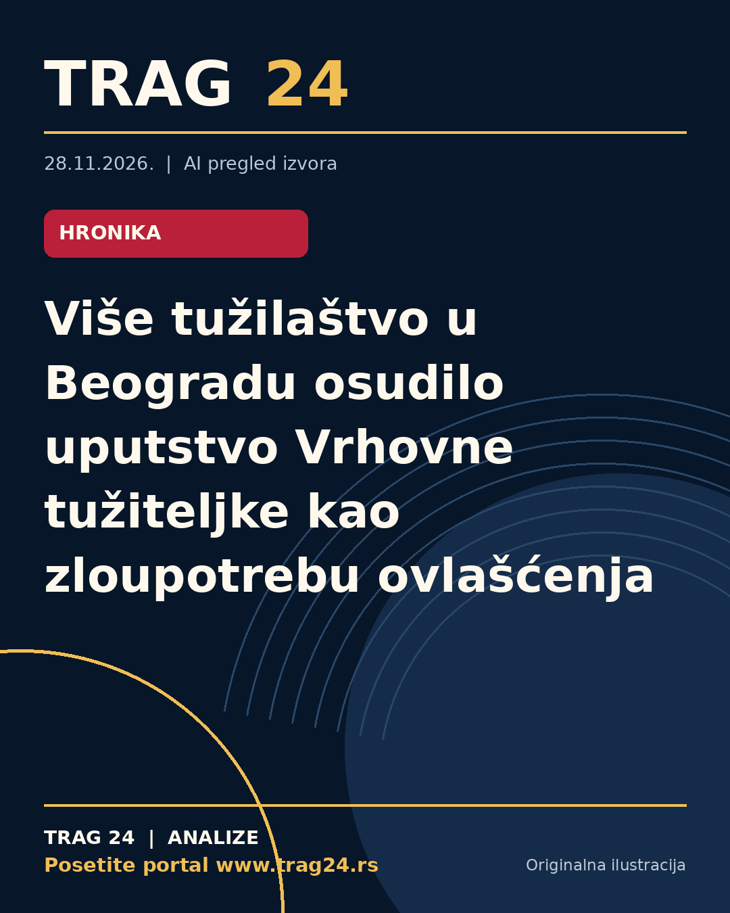

Više tužilaštvo u Beogradu osudilo uputstvo Vrhovne tužiteljke kao zloupotrebu ovlašćenja

ŠTA SE DOGODILO
Vrhovna javna tužiteljka Zagorka Dolovac uputila je obavezno uputstvo Tužilaštvu za organizovani kriminal da postupa po prijavama protiv glavnog tužioca Višeg javnog tužilaštva u Beogradu Nenada Stefanovića. Te prijave uključuju krivičnu prijavu koju su podneli predstavnici Studentske liste, kao i nalaze iz izveštaja Komisije Vrhovnog tužilaštva o radu Višeg tužilaštva u Beogradu, gde su utvrđene nepravilnosti u više predmeta. Reagovalo je Više javno tužilaštvo u Beogradu koje u saopštenju smatra da je ovogodišnje uputstvo Dolovac zloupotreba hijerarhijskih ovlašćenja.
HRONOLOGIJA
Prijava Studentske liste podneta je 6. novembra, a Komisija Vrhovnog javnog tužilaštva prethodno je sprovela kontrolu rada sedam predmeta u Višem tužilaštvu u Beogradu, među kojima su 'Zvučni top', 'Zamolnica SAD' i 'Upad u rektorat'. Komisija je izradila izveštaj sa nalazima o postupanju tužilaca i dali su preporuke o disciplinskim ili krivičnim postupcima protiv pojedinaca, uključujući glavnog tužioca Stefanovića. Dana 27. oktobra 2026. godine Vrhovna tužiteljka je uputila obavezno uputstvo za postupanje po izveštaju i prijavama. Nakon ovoga, Više tužilaštvo u Beogradu je izjavilo da Vrhovni tužilac nezakonito postupa i zloupotrebljava ovlašćenja.
ŠTA NAVODE IZVORI
Iz saopštenja Višeg javnog tužilaštva navodi se da je Komisija formirana od strane Vrhovnog tužioca, što po njima nije bilo u skladu sa zakonom, a izveštaj te komisije predstavlja krivičnu prijavu koju Dolovac nameće da se po njoj postupa kao po obaveznom nalogu. Takođe tvrde da je u postupku Komisije bilo povrede prava na izjašnjenje tužilaca, procesnih garancija i pretpostavke nevinosti. Izveštaj je, dodaju, bio selektivan i imao je za cilj nanošenje štete javnim tužiocima, posebno glavnom tužiocu Stefanoviću. Navode da je predsednik Komisije već podneo krivičnu prijavu zbog zahteva za ostavkom pre nego što je kontrola završena, što dovodi u pitanje nepristrasnost. Ukazuju i da izveštaj nije razmatran od strane Kolegijuma Višeg tužilaštva, već je objavljen javno na internetu. Komentarišu da je ta situacija i razlog za obraćanje evropskim institucijama.
ŠTA JE POTVRĐENO
Potvrđeno je da je Vrhovni javni tužilac Zagorka Dolovac uputila obavezno uputstvo Tužilaštvu za organizovani kriminal da deluje po prijavama protiv Nenada Stefanovića i po izveštaju Komisije o radu Višeg tužilaštva u Beogradu. Takođe je potvrđeno da je Više javno tužilaštvo u Beogradu izrazilo protivljenje ovom uputstvu i ocenilo ga kao zloupotrebu ovlašćenja. Komisija je sprovela kontrolu sedam predmeta i sastavila izveštaj koji je objavljen na internet stranici Vrhovnog tužilaštva.
ŠTA NIJE POTVRĐENO
Iz dostupnih informacija nije potvrđeno da postoje disciplinske ili krivične sankcije protiv Nenada Stefanovića ili drugih pojedinaca u Višem tužilaštvu, niti da su mere iz uputstva realizovane do sada. Takođe nije potvrđeno pravno tumačenje zakonitosti formiranja Komisije, što je predmet različitih interpretacija između Vrhovnog i Višeg tužilaštva u Beogradu.
ŠTA OSTАJE OTVORENO: Ostaje otvoreno da li će i kako nadležni organi postupiti po obaveznom uputstvu Vrhovne tužiteljke, odnosno da li će pokrenuti krivične ili disciplinske postupke protiv okrivljenih. Takođe ostaje nejasno kako će se razvijati pravni spor između Bele kuće i Višeg tužilaštva u Beogradu u vezi sa zakonitošću formiranja Komisije i samim nalazima iz izveštaja. Pitanje je i kako će evropske institucije reagovati na obraćanja Višeg tužilaštva u Beogradu povodom postupanja Vrhovnog tužilaštva.
Izvori
- https://insajder.net/prenosimo/vise-tuzilastvo-u-beogradu-reagovalo-na-obavezno-uputstvo-vrhovne-tuziteljke-dolovac-na-najgrublji-nacin-zloupotrebila-hijerarhijska-ovlascenja
- https://www.nedeljnik.rs/vjt-vrhovni-tuzilac-na-najgrublji-nacin-zloupotrebila-svoja-ovlascenja/
- https://www.euronews.rs/srbija/politika/254093/vjt-beograd-vrhovni-tuzilac-zloupotrebila-ovlascenja/vest
Ova analiza je pripremljena uz pomoć veštačke inteligencije na osnovu javno dostupnih izvora. Navodi izvora nisu nužno nezavisno potvrđeni.